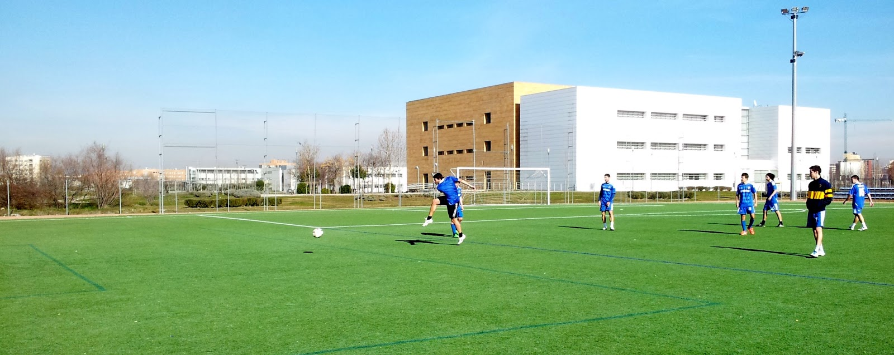

All ICSME participants are invited (RVSP (*)) to have a nice afternoon playing some football (soccer) and basketball with other fellow participants.
As we have not been able to find a place to play close to the venue (Friday afternoon is a very requested time frame), we will go the Campus de Fuenlabrada, located 20 km South of Madrid, of the Universidad Rey Juan Carlos, the university of the General Chair of ICMSE 2018. We will have therefore a bus taking us there and back to the city center. We will also share some drinks after the games.
Tentative Agenda:
(*) RVSP: ICSME participants will receive by September 11 an e-mail with instructions on how to confirm their participation in the Sports event. This is important to know how many will be (e.g., if we are enough for a basketball game)
